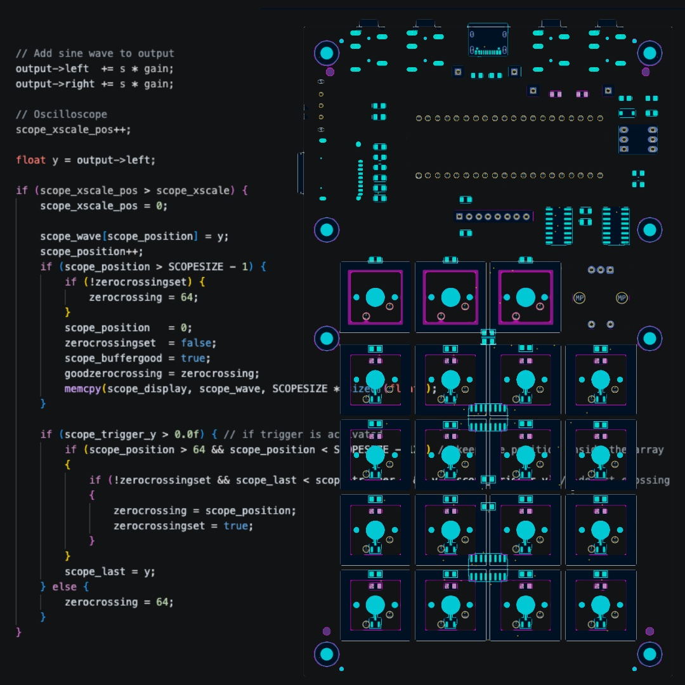

Fast Pattern Creation
Create and evolve loops quickly so ideas stay alive while they still feel exciting.
MICRO GROOVEBOX • OPEN HARDWARE • FOCUSED WORKFLOW
RHYTHM is a compact groovebox designed to help ideas arrive faster. It favors direct control, quick pattern building, and thoughtful creative limits so you spend less time configuring and more time making something worth keeping.

STORY

RHYTHM comes from a long history of audio projects.
In 2005, we created PSP Rhythm, a music sequencer that built a small but loyal following and introduced the core workflow ideas that would eventually shape RHYTHM.
When Apple opened its SDK in 2008, we moved to that platform and built BTBX, Rhythm Studio, Modular, and other audio apps. Each project pushed those ideas further, but the larger goal never went away: to create a real hardware instrument that felt immediate and focused.
After years of experiments, design work, and hard-earned electronics lessons, RHYTHM became the hardware version of that idea: compact, tactile, musical, and real.
WHY IT EXISTS
Plenty of devices can do everything. Very few make you want to keep going. RHYTHM aims for a better balance: enough power to build compelling grooves, enough restraint to keep the process fast, musical, and satisfying.
Create and evolve loops quickly so ideas stay alive while they still feel exciting.
Physical interaction comes first, helping the instrument feel expressive instead of abstract.
Strong contrast and clear visual structure keep your attention on music, not on deciphering screens.
Good limitations don’t block ideas — they shape them into something stronger and more memorable.
THE EXPERIENCE
RHYTHM is meant for the part of music-making that matters most: the moment an idea first lands. Its job is to help you catch that idea, shape it quickly, and stay in motion long enough to turn it into a real pattern, a real track, or the seed of something larger.

SOFTWARE
HARDWARE
DOCUMENTATION
RHYTHM documentation will grow alongside the instrument, from first-use quick starts to deeper workflow guides, full reference material, and videos.
COMMUNITY
RHYTHM is meant to grow with a real community around it — a place where musicians, makers, and early supporters can share ideas, compare workflows, offer feedback, and help shape what comes next.
SOFTWARE
Use the Web Firmware Flash Utility to update your groovebox. Download the SD card image when you need to prepare or restore samples and demo songs.
LAUNCH
Kickstarter details are coming. Join the community for build updates, release timing, and early feedback.